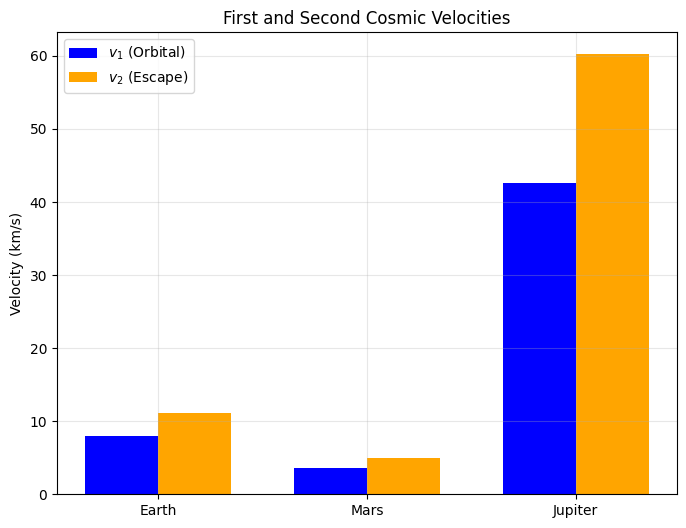
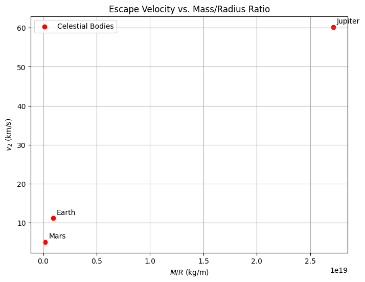

Escape Velocities and Cosmic Velocities
Motivation
The concept of escape velocity is fundamental to understanding how objects can break free from a celestial body's gravitational pull. Building on this, the first, second, and third cosmic velocities provide critical thresholds for orbiting a planet, escaping its gravity, and departing its star system, respectively. These velocities are essential for space exploration, governing satellite launches, interplanetary missions, and the theoretical framework for interstellar travel.
Definitions and Physical Meaning
- First Cosmic Velocity (\(v_1\)):
The minimum speed required for an object to achieve a stable circular orbit around a celestial body at its surface. It is essentially the orbital velocity at radius \(r = R\), where \(R\) is the body's radius.
- Second Cosmic Velocity (\(v_2\)):
Known as the escape velocity, this is the minimum speed needed to escape a celestial body’s gravitational field from its surface, reaching infinity with zero residual velocity.
- Third Cosmic Velocity (\(v_3\)):
The minimum speed required to escape the gravitational influence of a star system (e.g., the Solar System) from a planet’s surface, assuming the planet is in a circular orbit around the star.
Mathematical Derivations
First Cosmic Velocity (\(v_1\))
The first cosmic velocity is derived from the condition for circular orbit, where gravitational force equals centripetal force: \(G M m / r^2 = m v^2 / r\). At the surface, \(r = R\):
Multiply by \(R\):
Thus:
where \(G\) is the gravitational constant, \(M\) is the mass of the celestial body, and \(R\) is its radius.
Second Cosmic Velocity (\(v_2\))
The escape velocity is derived from conservation of energy. Total mechanical energy at the surface (kinetic + potential) must be zero at infinity:
Simplify:
Thus:
Note that \(v_2 = \sqrt{2} v_1\), meaning escape velocity is \(\sqrt{2}\) times the orbital velocity.
Third Cosmic Velocity (\(v_3\))
The third cosmic velocity is more complex, as it involves escaping the star’s gravitational field from a planet’s surface. For a planet in a circular orbit around a star (mass \(M_s\), orbital radius \(a\)), the planet’s orbital velocity is \(v_p = \sqrt{G M_s / a}\). The total velocity to escape the Solar System from the planet’s surface combines:
- Escaping the planet: \(v_2 = \sqrt{2 G M / R}\).
- Matching the planet’s orbital velocity and exceeding the star’s escape velocity at \(a\).
The escape velocity from the star’s field at distance \(a\) is:
Assuming the launch is in the direction of the planet’s orbit, the approximate \(v_3\) from the surface is:
For Earth escaping the Sun:
Parameters Affecting These Velocities
- Mass (\(M\)): Higher mass increases all velocities (\(v_1\), \(v_2\), \(v_3\)).
- Radius (\(R\)): Larger radius decreases \(v_1\) and \(v_2\) (inverse relationship).
- Star’s Mass (\(M_s\)) and Orbital Distance (\(a\)): For \(v_3\), a more massive star or smaller orbit increases the velocity needed to escape the system.
Calculations for Celestial Bodies
Earth
- \(M = 5.972 \times 10^{24}\) kg
- \(R = 6.371 \times 10^6\) m
- \(G = 6.6743 \times 10^{-11}\) m³ kg⁻¹ s⁻²
- \(M_s = 1.989 \times 10^{30}\) kg (Sun’s mass)
- \(a = 1.496 \times 10^{11}\) m (1 AU)
Mars
- \(M = 6.417 \times 10^{23}\) kg
- \(R = 3.39 \times 10^6\) m
Jupiter
- \(M = 1.899 \times 10^{27}\) kg
- \(R = 6.991 \times 10^7\) m
Importance in Space Exploration
- Launching Satellites: \(v_1\) determines the speed for low Earth orbit (e.g., 7.91 km/s). Rockets must exceed this, typically reaching 8-10 km/s with altitude.
- Interplanetary Missions: \(v_2\) (11.19 km/s for Earth) is the threshold for missions to Mars or the Moon. Additional velocity from Earth’s motion aids efficiency.
- Interstellar Travel: \(v_3\) (16.6 km/s from Earth) sets the bar for escaping the Solar System, as achieved by Voyager 1 using gravitational assists.
Python Scripts and Visualizations
Python Script 1: Cosmic Velocities Bar Plot

Python Script 2: Velocity vs. Mass/Radius Ratio
